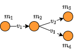
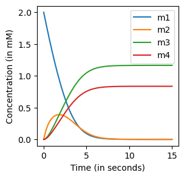

Building models
Metabolic kinetic modelling
The time evolution of metabolic states are often described by a set of Ordinary Differential Equations (ODEs): $$\frac{dm(t)}{dt}=S\cdot v(t,m(t),\theta)$$
\(S\) is the stoichiometric matrix that describes the mass balances of a metabolic system. The fluxes \(v\) are described by reaction mechanisms, typically of some form like Michaelis-Menten or Hill equations. These mechanisms are parameterized by \(\theta\). By providing the initial values of the metabolic states, the ODEs can be solved using a numerical solver: $$m(T)=m(0)+\int_0^T S\cdot v(t,m(t),\theta)dt$$
We will describe below how you can build your own models that are compatible with Jax/Diffrax [1].
The Reaction object
A reaction-centric approach
Models can be built in a reaction-centric manner. Initializing a Reaction object requires five inputs: name of the reaction, names of the species involved, stoichiometry of the reaction, compartments of the species involved, and the reaction's mechanism.
from jaxkineticmodel.kinetic_mechanisms import JaxKineticMechanisms as jm
from jaxkineticmodel.building_models import JaxKineticModelBuild as jkm
import jax.numpy as jnp
import jax
import matplotlib.pyplot as plt
import pandas as pd
ReactionA=jkm.Reaction(
name="ReactionA",
species=['A','B'],
stoichiometry=[-1,1],
compartments=['c','c'],
mechanism=jm.Jax_MM_Irrev_Uni(substrate="A",vmax="A_Vmax",km_substrate="A_Km"),
)
The mechanism is another class that describes the flux function, which depends on metabolite states and parameters. Parameters are pointed towards with unique symbols. The reaction object is implemented in a way that own-implemented flux functions can be used. We have also implemented a set of general flux functions that are often used in systems biology.
Table of implemented mechanisms
| Type of Reaction | Name (in JAX class) | Number of Parameters |
|---|---|---|
| A → B | Jax_MM_Irrev_Uni | 2 |
| A → B | Jax_MM_Irrev_Uni_w_modifiers | 2 + modifiers |
| A ↔ B | Jax_MM_Rev_UniUni | 4 |
| A → | Jax_MM_Sink | 2 |
| A → | Jax_MA_Irrev | 1 |
| A ⇒ | Jax_Facilitated_Diffusion | 3 |
| A ⇒ | Jax_Diffusion | 2 |
| A + B → C | Jax_MM_Irrev_Bi | 3 |
| Jax_MM_Irrev_Bi_w_Inhibition | 3 | |
| Jax_MM_Irrev_Bi_w_modifiers | 3 + modifiers | |
| A + B ↔ C + D | Jax_MM_Rev_BiBi | 6 |
| Jax_MM_Rev_BiBi_w_Inhibition | 7 | |
| Jax_MM_Rev_BiBi_w_Activation | 9 | |
| A + B ↔ C + D | Jax_MA_Rev_Bi | 2 |
| A ↔ B + C | Jax_MM_Rev_UniBi | 5 |
| A + B → C + D + E | Jax_MM_Ordered_BiTri | 7 |
| A + B → C + D | Jax_ADH | 15 |
| A → B + C | Jax_Hill_Bi_Irreversible_Activation | 7 |
| A → B + C | Jax_Hill_Irreversible_Inhibition | 7 |
Building simple models
A simple metabolic network example
Here, we show an example of how to build kinetic models using the reaction objects described above. We model the following network:

Three metabolic fluxes need to be modelled
v1=jkm.Reaction(
name="v1",
species=['m1','m2'],
stoichiometry=[-1,1],
compartments=['c','c'],
mechanism=jm.Jax_MM_Irrev_Uni(substrate="m1",vmax="A_Vmax",km_substrate="A_Km"),
)
v2=jkm.Reaction(
name="v2",
species=['m2','m3'],
stoichiometry=[-1,1],
compartments=['c','c'],
mechanism=jm.Jax_MM_Irrev_Uni(substrate="m2",vmax="B_Vmax",km_substrate="B_Km"),
)
v3=jkm.Reaction(
name="v3",
species=['m2','m4'],
stoichiometry=[-1,1],
compartments=['c','c'],
mechanism=jm.Jax_MM_Irrev_Uni(substrate="m2",vmax="C_Vmax",km_substrate="C_Km"),
)
reactions=[v1,v2,v3]
compartment_values={'c':1}
# initialize the kinetic model object, and then make it a simulation object through jkm.NeuralODE
kmodel=jkm.JaxKineticModel_Build(reactions,compartment_values)
kmodel_sim=jkm.NeuralODEBuild(kmodel)
print(kmodel.stoichiometric_matrix)
The stoichiometric matrix is automatically constructed from the reactions.
v1 v2 v3
m1 -1.0 0.0 0.0
m2 1.0 -1.0 -1.0
m3 0.0 1.0 0.0
m4 0.0 0.0 1.0
One can first jax.jit the model [2] and solve the ODEs using the diffrax package [1], which contains many nice numerical solvers.
ts=jnp.linspace(0,10,1000)
y0=jnp.array([2,0,0,0])
params=dict(zip(kmodel.parameter_names,jnp.array([1,1,1,1,1.5,1])))
#jit the kmodel object. This results in a slow initial solve, but a c-compiled solve
kmodel_sim=jax.jit(kmodel_sim)
ys=kmodel_sim(ts,y0,params)
ys=pd.DataFrame(ys,columns=kmodel.species_names)
fig,ax=plt.subplots(figsize=(4,4))
ax.plot(ts,ys['m1'],label="m1")
ax.plot(ts,ys['m2'],label="m2")
ax.plot(ts,ys['m3'],label="m3")
ax.plot(ts,ys['m4'],label="m4")
ax.set_xlabel("Time (in seconds)")
ax.set_ylabel("Concentration (in mM)")
ax.legend()
plt.show()

Figure 1: ODE simulation.
On jit-compiling kinetic models
When you simulated a jit-compiled kinetic model for a certain time-range (e.g., jnp.linspace(0,10,1000) and you want to elongate this, it is best to not change the number of timepoints (e.g, jnp.linspace(0,1000,1000). Otherwise, the kinetic models needs to be recompiled.
Boundary conditions
Boundary conditions can be either constant or not constant. Both are implemented as a BoundaryCondition class
Constant boundary conditions
Suppose for the system above, we want to make metabolite \(m_1\) a constant boundary condition. We can redefine the species by replacing it with a value
kmodel.add_boundary('m1',jkm.BoundaryCondition("2", constant=True))
print(kmodel.stoichiometric_matrix)
#recompile and simulate
kmodel_sim=jkm.NeuralODEBuild(kmodel)
ts=jnp.linspace(0,10,1000)
#we remove m1 from y0, as this is now not evaluated by solving
y0=jnp.array([0,0,0])
params=dict(zip(kmodel.parameter_names,jnp.array([1,1,1,1,1.5,1])))
#jit the kmodel object. This results in a slow initial solve, but a c-compiled solve
kmodel_sim=jax.jit(kmodel_sim)
ys=kmodel_sim(ts,y0,params)
ys=pd.DataFrame(ys,columns=kmodel.species_names)
#plot
fig,ax=plt.subplots(figsize=(4,4))
ax.plot(ts,ys['m2'],label="m2")
ax.plot(ts,ys['m3'],label="m3")
ax.plot(ts,ys['m4'],label="m4")
ax.set_xlabel("Time (in seconds)")
ax.set_ylabel("Concentration (in mM)")
ax.legend()
plt.show()

Figure 2: ODE simulation with \(m1=constant\).
Non-constant boundary conditions
For non-constant boundary conditions, you can use the BoundaryCondition class as before. You can use for example the interpolation abstract classes from Diffrax. For analytic expression dependent on time t, these can be done as follows:
kmodel=jkm.JaxKineticModel_Build(reactions,compartment_values)
kmodel.add_boundary('m1',jkm.BoundaryCondition('0.5+0.3*sin(t)'))
print(kmodel.stoichiometric_matrix)
kmodel_sim=jkm.NeuralODEBuild(kmodel)
ts=jnp.linspace(0,10,1000)
#we remove m1 from y0, as this is now not evaluated by solving
y0=jnp.array([0,0,0])
params=dict(zip(kmodel.parameter_names,jnp.array([1,1,1,1,1.5,1])))
#jit the kmodel object. This results in a slow initial solve, but a c-compiled solve
kmodel_sim=jax.jit(kmodel_sim)
ys=kmodel_sim(ts,y0,params)
ys=pd.DataFrame(ys,columns=kmodel.species_names)
fig,ax=plt.subplots(figsize=(4,4))
ax.plot(ts,ys['m2'],label="m2")
ax.plot(ts,ys['m3'],label="m3")
ax.plot(ts,ys['m4'],label="m4")
ax.set_xlabel("Time (in seconds)")
ax.set_ylabel("Concentration (in mM)")
ax.legend()
plt.show()

Figure 3: ODE simulation with \(m1=0+5+0.3*sin(t)\).
Building custom models
When building kinetic models, it is not uncommon that \(\frac{dm(t)}{dt}\) is not fully based on the evaluation of \(S\cdot v(t)\). For these cases, one can still use the kinetic mechanisms described above but with a manual setup of the ODEs. We have provided a custom implementation of glycolysis in Custom models as an example.
Saving models
Coming up
References
[1] Kidger, P. (2022). On neural differential equations. arXiv preprint arXiv:2202.02435.
[2] Bradbury, J., Frostig, R., Hawkins, P., Johnson, M. J., Leary, C., Maclaurin, D., ... & Zhang, Q. (2018). JAX: composable transformations of Python+ NumPy programs.